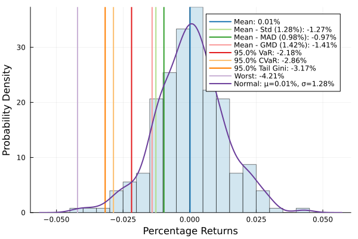

The source files can be found in user_guide/.
Risk measures
The previous page showed which optimiser to call. This one is the catalogue of what you ask it to minimise: the r slot. PortfolioOptimisers.jl ships a large family of measures, and the names alone do not tell you which is which — several of the best-known ones (mean absolute deviation, semi-variance, Gini mean difference) are not types at all but configurations of a generic type, reachable through a short alias.
This page is a reference, not a tutorial. It answers three questions in one place:
- What measures exist, and what does each penalise?
- Which optimisers accept it?
- What is its short alias, and what does that alias expand to?
Every table below is generated from the type system and the compatibility trait (supports_risk_measure, ADR 0018), so it cannot drift from what the optimisers actually dispatch on. The one-line meanings are curated, and the page fails the docs build if a measure is added without one.
using PortfolioOptimisers, CSV, TimeSeries, DataFrames, PrettyTables, InteractiveUtils, StatsPlots, GraphRecipes1. How a measure is used
A risk measure plays two roles, and they use two different call shapes.
Inside an optimiser it is a configuration: you hand it to the r field and the optimiser turns it into constraints and an objective term.
Outside an optimiser it is a callable functor: you evaluate it on a book to get a number. expected_risk is the uniform way in — it knows which of the three input shapes (net returns, weights + returns + fees, weights alone) each measure wants, so you do not have to.
X = TimeArray(CSV.File(joinpath(@__DIR__, "../examples/SP500.csv.gz")); timestamp = :Date)[(end - 252):end]rd = prices_to_returns(X)pr = prior(EmpiricalPrior(), rd)w = optimise(EqualWeighted(), rd).wmeasures = [SD(), MAD(), CVaR(), CDaR(), MDD(), UCI()]pretty_table(DataFrame("Measure" => ["StandardDeviation", "MAD (LowOrderMoment)", "ConditionalValueatRisk", "ConditionalDrawdownatRisk", "MaximumDrawdown", "UlcerIndex"], "Risk of the equal-weighted book" => [expected_risk(factory(r, pr), w, pr.X) for r in measures]))┌───────────────────────────┬─────────────────────────────────┐
│ Measure │ Risk of the equal-weighted book │
│ String │ Float64 │
├───────────────────────────┼─────────────────────────────────┤
│ StandardDeviation │ 0.0128283 │
│ MAD (LowOrderMoment) │ 0.00980733 │
│ ConditionalValueatRisk │ 0.0286097 │
│ ConditionalDrawdownatRisk │ 0.134511 │
│ MaximumDrawdown │ 0.147839 │
│ UlcerIndex │ 0.0613099 │
└───────────────────────────┴─────────────────────────────────┘factory binds a measure to a prior — it is what fills in sigma for Variance/StandardDeviation and mu for the moment measures. Measures that read only the return path (ConditionalValueatRisk, the drawdown family) do not need it, but calling factory unconditionally is always safe and is exactly what the optimisers do internally. The measures that solve a sub-problem to evaluate — EntropicValueatRisk, RelativisticValueatRisk, and their drawdown twins — additionally need a Solver in their slv field before you can call them outside an optimiser.
Handing expected_risk the prior itself — expected_risk(r, w, pr) — runs factory for you, so the explicit call above is only needed when you want the bound measure back. Handing it a bare returns matrix cannot: a slot that holds a DeferredQuantity has no prior to resolve against there, and the call refuses rather than guessing.
That second form is the other half of the slot. sigma, mu, kt and sk each take the value or the estimator that computes it, and the estimator is resolved against whichever prior the optimisation actually runs on — per cross-validation fold, per resampled subset. Worked through in the subset resampling example.
2. The three usage classes
Every measure sits in one of three classes, and the class is what determines where it is legal. The Optimisers column in every table below is derived from it:
| Class | Optimisers column | Meaning |
|---|---|---|
RiskMeasure | JuMP + clustering | Has a convex JuMP formulation. Usable everywhere: MeanRisk, RiskBudgeting, NearOptimalCentering, FactorRiskContribution, and the clustering optimisers. |
HierarchicalRiskMeasure | clustering only | No JuMP formulation — it is only ever evaluated numerically, which clustering optimisers can do but a solver cannot. Passing one to MeanRisk is a type error, not a silent fallback. |
NonOptimisationRiskMeasure | diagnostic only | Not an optimisation target at all: a reporting quantity (ExpectedReturn, Skewness) or a ratio used for scoring in cross-validation. |
Meta-optimisers (NestedClustered, Stacking, SubsetResampling) have no r of their own; they accept a measure only when every constituent optimiser does, so their acceptance is instance-specific and is not tabulated. Ask directly:
supports_risk_measure(MeanRisk, ConditionalValueatRisk) # truesupports_risk_measure(MeanRisk, EqualRisk) # false — hierarchical onlysupported_risk_measures(HierarchicalRiskParity) # OptimisationRiskMeasure3. The catalogue
The curated one-liner for each measure, its alias, and its class — grouped by what the measure looks at rather than by source file. Every name below is exported and documented: the full signature, fields, and references live under API → Risk Measures, and ?ConditionalValueatRisk in the REPL gets you there without leaving the terminal.
# Reverse-map the exported alias layer onto the measure types it names, so the alias column# is read off the package rather than transcribed.rm_alias = Dict{Symbol, String}()for n in names(PortfolioOptimisers) v = getfield(PortfolioOptimisers, n) if isa(v, Type) && v <: PortfolioOptimisers.AbstractBaseRiskMeasure && nameof(v) != n rm_alias[nameof(v)] = String(n) endend# Class → the `Optimisers` column, derived from the ADR 0018 trait.function usage_class(T) return if supports_risk_measure(MeanRisk, T) "JuMP + clustering" elseif supports_risk_measure(HierarchicalRiskParity, T) "clustering only" else "diagnostic only" endend# The curated catalogue: family => [measure => what it penalises].catalogue = ["Dispersion and moments" => [:Variance => "Portfolio variance from a covariance matrix — the default `r`.", :StandardDeviation => "Square root of the variance; same ordering, different scale.", :UncertaintySetVariance => "Worst-case variance over a covariance uncertainty set (robust).", :LowOrderMoment => "Generic first/second moment measure; see §4 for its aliases.", :HighOrderMoment => "Generic third/fourth moment measure; see §4 for its aliases.", :MedianAbsoluteDeviation => "Median absolute deviation — the robust cousin of `MAD()`.", :Kurtosis => "Square-root kurtosis from the cokurtosis tensor (fat tails).", :NegativeSkewness => "Downside asymmetry from the coskewness tensor.", :VarianceSkewKurtosis => "Variance, skewness, and kurtosis combined in one expression.", :BrownianDistanceVariance => "Distance variance — penalises *any* dependence, not just linear."], "Tail — X-at-Risk" => [:WorstRealisation => "The single worst observed loss.", :ValueatRisk => "The `alpha` quantile of the loss distribution (MIP).", :ConditionalValueatRisk => "Mean loss beyond the `alpha` quantile; expected shortfall.", :DistributionallyRobustConditionalValueatRisk => "CVaR under a Wasserstein ball around the empirical distribution.", :EntropicValueatRisk => "Exponential-cone upper bound on VaR; tighter tail control than CVaR.", :RelativisticValueatRisk => "Power-cone family interpolating between CVaR and worst realisation.", :PowerNormValueatRisk => "Power-norm tail measure parameterised by the norm order."], "Tail ranges (both sides)" => [:Range => "Best realisation minus worst realisation.", :ValueatRiskRange => "Loss-side VaR plus gain-side VaR.", :ConditionalValueatRiskRange => "Loss-side CVaR plus gain-side CVaR.", :DistributionallyRobustConditionalValueatRiskRange => "Two-sided distributionally robust CVaR.", :EntropicValueatRiskRange => "Two-sided entropic VaR.", :RelativisticValueatRiskRange => "Two-sided relativistic VaR.", :PowerNormValueatRiskRange => "Two-sided power-norm VaR.", :GenericValueatRiskRange => "Any pair of tail measures, one per side of the distribution."], "Drawdown — uncompounded" => [:AverageDrawdown => "Mean depth of the drawdown path.", :UlcerIndex => "Root-mean-square drawdown depth; penalises long deep spells.", :MaximumDrawdown => "Deepest peak-to-trough loss.", :DrawdownatRisk => "The `alpha` quantile of the drawdown path (MIP).", :ConditionalDrawdownatRisk => "Mean drawdown beyond the `alpha` quantile.", :DistributionallyRobustConditionalDrawdownatRisk => "CDaR under a Wasserstein ball.", :EntropicDrawdownatRisk => "Exponential-cone bound on the drawdown quantile.", :RelativisticDrawdownatRisk => "Power-cone drawdown family, CDaR → max drawdown.", :PowerNormDrawdownatRisk => "Power-norm drawdown measure."], "Drawdown — compounded (relative)" => [:RelativeAverageDrawdown => "Average drawdown of the compounded wealth path.", :RelativeUlcerIndex => "Ulcer index of the compounded wealth path.", :RelativeMaximumDrawdown => "Maximum drawdown of the compounded wealth path.", :RelativeDrawdownatRisk => "Drawdown-at-risk of the compounded wealth path.", :RelativeConditionalDrawdownatRisk => "Conditional drawdown-at-risk, compounded.", :RelativeEntropicDrawdownatRisk => "Entropic drawdown-at-risk, compounded.", :RelativeRelativisticDrawdownatRisk => "Relativistic drawdown-at-risk, compounded.", :RelativePowerNormDrawdownatRisk => "Power-norm drawdown-at-risk, compounded."], "Ordered weights arrays" => [:OrderedWeightsArray => "Any weighting of the *sorted* losses; the most general family (§4).", :OrderedWeightsArrayRange => "An OWA applied to both sides of the distribution."], "Path and mandate" => [:TrackingRiskMeasure => "Deviation of the book's returns from a benchmark.", :RiskTrackingRiskMeasure => "Deviation of the book's *risk* from a benchmark's risk.", :TurnoverRiskMeasure => "Distance from the previous weights; penalises trading."], "Composite and structural" => [:EqualRisk => "Drives every cluster to carry the same risk (hierarchical).", :RiskRatio => "Ratio of two measures, used as a hierarchical objective.", :NoRisk => "Contributes nothing — a null `r` for return-only problems."], "Non-optimisation (diagnostics and scoring)" => [:ExpectedReturn => "Prior expected return of the book.", :MeanReturn => "Realised mean return of the book.", :Skewness => "Standardised skewness of the return distribution.", :ThirdCentralMoment => "Unstandardised third central moment.", :NonOptimisationRiskRatio => "Ratio of any two non-optimisation measures.", :ExpectedReturnRiskRatio => "Prior expected return over risk — a Sharpe-style score.", :MeanReturnRiskRatio => "Realised mean return over risk."]]# Every concrete measure must appear exactly once — this is what stops the page drifting.function leaf_measures(T, acc = Type[]) subs = subtypes(T) isempty(subs) ? push!(acc, T) : foreach(S -> leaf_measures(S, acc), subs) return accendall_measures = Set(nameof.(leaf_measures(PortfolioOptimisers.AbstractBaseRiskMeasure)))listed = [first(p) for (_, fam) in catalogue for p in fam]@assert allunique(listed)@assert Set(listed) == all_measuresfunction family_table(name) entries = catalogue[findfirst(p -> first(p) == name, catalogue)][2] return DataFrame("Measure" => [String(first(e)) for e in entries], "Alias" => [get(rm_alias, first(e), "—") for e in entries], "Penalises" => [last(e) for e in entries], "Optimisers" => [usage_class(getfield(PortfolioOptimisers, first(e))) for e in entries])end;Dispersion and moments
pretty_table(family_table("Dispersion and moments"))┌──────────────────────────┬────────────┬──────────────────────────────────────────────────────────────────┬───────────────────┐
│ Measure │ Alias │ Penalises │ Optimisers │
│ String │ String │ String │ String │
├──────────────────────────┼────────────┼──────────────────────────────────────────────────────────────────┼───────────────────┤
│ Variance │ — │ Portfolio variance from a covariance matrix — the default `r`. │ JuMP + clustering │
│ StandardDeviation │ SD │ Square root of the variance; same ordering, different scale. │ JuMP + clustering │
│ UncertaintySetVariance │ UcVariance │ Worst-case variance over a covariance uncertainty set (robust). │ JuMP + clustering │
│ LowOrderMoment │ — │ Generic first/second moment measure; see §4 for its aliases. │ JuMP + clustering │
│ HighOrderMoment │ — │ Generic third/fourth moment measure; see §4 for its aliases. │ clustering only │
│ MedianAbsoluteDeviation │ — │ Median absolute deviation — the robust cousin of `MAD()`. │ clustering only │
│ Kurtosis │ — │ Square-root kurtosis from the cokurtosis tensor (fat tails). │ JuMP + clustering │
│ NegativeSkewness │ — │ Downside asymmetry from the coskewness tensor. │ JuMP + clustering │
│ VarianceSkewKurtosis │ VSK │ Variance, skewness, and kurtosis combined in one expression. │ JuMP + clustering │
│ BrownianDistanceVariance │ BDVariance │ Distance variance — penalises *any* dependence, not just linear. │ JuMP + clustering │
└──────────────────────────┴────────────┴──────────────────────────────────────────────────────────────────┴───────────────────┘Tail — X-at-Risk
pretty_table(family_table("Tail — X-at-Risk"))┌──────────────────────────────────────────────┬────────┬──────────────────────────────────────────────────────────────────────┬───────────────────┐
│ Measure │ Alias │ Penalises │ Optimisers │
│ String │ String │ String │ String │
├──────────────────────────────────────────────┼────────┼──────────────────────────────────────────────────────────────────────┼───────────────────┤
│ WorstRealisation │ WR │ The single worst observed loss. │ JuMP + clustering │
│ ValueatRisk │ VaR │ The `alpha` quantile of the loss distribution (MIP). │ JuMP + clustering │
│ ConditionalValueatRisk │ CVaR │ Mean loss beyond the `alpha` quantile; expected shortfall. │ JuMP + clustering │
│ DistributionallyRobustConditionalValueatRisk │ DRCVaR │ CVaR under a Wasserstein ball around the empirical distribution. │ JuMP + clustering │
│ EntropicValueatRisk │ EVaR │ Exponential-cone upper bound on VaR; tighter tail control than CVaR. │ JuMP + clustering │
│ RelativisticValueatRisk │ RLVaR │ Power-cone family interpolating between CVaR and worst realisation. │ JuMP + clustering │
│ PowerNormValueatRisk │ PNVaR │ Power-norm tail measure parameterised by the norm order. │ JuMP + clustering │
└──────────────────────────────────────────────┴────────┴──────────────────────────────────────────────────────────────────────┴───────────────────┘Tail ranges (both sides)
pretty_table(family_table("Tail ranges (both sides)"))┌───────────────────────────────────────────────────┬───────────┬──────────────────────────────────────────────────────────────┬───────────────────┐
│ Measure │ Alias │ Penalises │ Optimisers │
│ String │ String │ String │ String │
├───────────────────────────────────────────────────┼───────────┼──────────────────────────────────────────────────────────────┼───────────────────┤
│ Range │ RG │ Best realisation minus worst realisation. │ JuMP + clustering │
│ ValueatRiskRange │ VaR_RG │ Loss-side VaR plus gain-side VaR. │ JuMP + clustering │
│ ConditionalValueatRiskRange │ CVaR_RG │ Loss-side CVaR plus gain-side CVaR. │ JuMP + clustering │
│ DistributionallyRobustConditionalValueatRiskRange │ DRCVaR_RG │ Two-sided distributionally robust CVaR. │ JuMP + clustering │
│ EntropicValueatRiskRange │ EVaR_RG │ Two-sided entropic VaR. │ JuMP + clustering │
│ RelativisticValueatRiskRange │ RLVaR_RG │ Two-sided relativistic VaR. │ JuMP + clustering │
│ PowerNormValueatRiskRange │ PNVaR_RG │ Two-sided power-norm VaR. │ JuMP + clustering │
│ GenericValueatRiskRange │ GVaR_RG │ Any pair of tail measures, one per side of the distribution. │ JuMP + clustering │
└───────────────────────────────────────────────────┴───────────┴──────────────────────────────────────────────────────────────┴───────────────────┘Drawdown — uncompounded
pretty_table(family_table("Drawdown — uncompounded"))┌─────────────────────────────────────────────────┬────────┬──────────────────────────────────────────────────────────────┬───────────────────┐
│ Measure │ Alias │ Penalises │ Optimisers │
│ String │ String │ String │ String │
├─────────────────────────────────────────────────┼────────┼──────────────────────────────────────────────────────────────┼───────────────────┤
│ AverageDrawdown │ ADD │ Mean depth of the drawdown path. │ JuMP + clustering │
│ UlcerIndex │ UCI │ Root-mean-square drawdown depth; penalises long deep spells. │ JuMP + clustering │
│ MaximumDrawdown │ MDD │ Deepest peak-to-trough loss. │ JuMP + clustering │
│ DrawdownatRisk │ DaR │ The `alpha` quantile of the drawdown path (MIP). │ JuMP + clustering │
│ ConditionalDrawdownatRisk │ CDaR │ Mean drawdown beyond the `alpha` quantile. │ JuMP + clustering │
│ DistributionallyRobustConditionalDrawdownatRisk │ DRCDaR │ CDaR under a Wasserstein ball. │ JuMP + clustering │
│ EntropicDrawdownatRisk │ EDaR │ Exponential-cone bound on the drawdown quantile. │ JuMP + clustering │
│ RelativisticDrawdownatRisk │ RLDaR │ Power-cone drawdown family, CDaR → max drawdown. │ JuMP + clustering │
│ PowerNormDrawdownatRisk │ PNDaR │ Power-norm drawdown measure. │ JuMP + clustering │
└─────────────────────────────────────────────────┴────────┴──────────────────────────────────────────────────────────────┴───────────────────┘Drawdown — compounded (relative)
The Relative* twins measure drawdown on the compounded wealth path rather than the cumulative sum of returns. They have no convex JuMP formulation, which is why the whole family is clustering only.
pretty_table(family_table("Drawdown — compounded (relative)"))┌────────────────────────────────────┬─────────┬─────────────────────────────────────────────────┬─────────────────┐
│ Measure │ Alias │ Penalises │ Optimisers │
│ String │ String │ String │ String │
├────────────────────────────────────┼─────────┼─────────────────────────────────────────────────┼─────────────────┤
│ RelativeAverageDrawdown │ R_ADD │ Average drawdown of the compounded wealth path. │ clustering only │
│ RelativeUlcerIndex │ R_UCI │ Ulcer index of the compounded wealth path. │ clustering only │
│ RelativeMaximumDrawdown │ R_MDD │ Maximum drawdown of the compounded wealth path. │ clustering only │
│ RelativeDrawdownatRisk │ R_DaR │ Drawdown-at-risk of the compounded wealth path. │ clustering only │
│ RelativeConditionalDrawdownatRisk │ R_CDaR │ Conditional drawdown-at-risk, compounded. │ clustering only │
│ RelativeEntropicDrawdownatRisk │ R_EDaR │ Entropic drawdown-at-risk, compounded. │ clustering only │
│ RelativeRelativisticDrawdownatRisk │ R_RLDaR │ Relativistic drawdown-at-risk, compounded. │ clustering only │
│ RelativePowerNormDrawdownatRisk │ R_PNDaR │ Power-norm drawdown-at-risk, compounded. │ clustering only │
└────────────────────────────────────┴─────────┴─────────────────────────────────────────────────┴─────────────────┘Ordered weights arrays
pretty_table(family_table("Ordered weights arrays"))┌──────────────────────────┬────────┬─────────────────────────────────────────────────────────────────────┬───────────────────┐
│ Measure │ Alias │ Penalises │ Optimisers │
│ String │ String │ String │ String │
├──────────────────────────┼────────┼─────────────────────────────────────────────────────────────────────┼───────────────────┤
│ OrderedWeightsArray │ OWA │ Any weighting of the *sorted* losses; the most general family (§4). │ JuMP + clustering │
│ OrderedWeightsArrayRange │ — │ An OWA applied to both sides of the distribution. │ JuMP + clustering │
└──────────────────────────┴────────┴─────────────────────────────────────────────────────────────────────┴───────────────────┘Path and mandate
pretty_table(family_table("Path and mandate"))┌─────────────────────────┬────────┬─────────────────────────────────────────────────────────┬───────────────────┐
│ Measure │ Alias │ Penalises │ Optimisers │
│ String │ String │ String │ String │
├─────────────────────────┼────────┼─────────────────────────────────────────────────────────┼───────────────────┤
│ TrackingRiskMeasure │ TrRM │ Deviation of the book's returns from a benchmark. │ JuMP + clustering │
│ RiskTrackingRiskMeasure │ RkTrRM │ Deviation of the book's *risk* from a benchmark's risk. │ JuMP + clustering │
│ TurnoverRiskMeasure │ TnRM │ Distance from the previous weights; penalises trading. │ JuMP + clustering │
└─────────────────────────┴────────┴─────────────────────────────────────────────────────────┴───────────────────┘Composite and structural
pretty_table(family_table("Composite and structural"))┌───────────┬────────┬─────────────────────────────────────────────────────────────┬───────────────────┐
│ Measure │ Alias │ Penalises │ Optimisers │
│ String │ String │ String │ String │
├───────────┼────────┼─────────────────────────────────────────────────────────────┼───────────────────┤
│ EqualRisk │ — │ Drives every cluster to carry the same risk (hierarchical). │ clustering only │
│ RiskRatio │ — │ Ratio of two measures, used as a hierarchical objective. │ clustering only │
│ NoRisk │ — │ Contributes nothing — a null `r` for return-only problems. │ JuMP + clustering │
└───────────┴────────┴─────────────────────────────────────────────────────────────┴───────────────────┘Non-optimisation (diagnostics and scoring)
These are not legal in an r slot. They exist to score a book after the fact and to serve as cross-validation scorers — see validation and tuning.
pretty_table(family_table("Non-optimisation (diagnostics and scoring)"))┌──────────────────────────┬───────────────┬─────────────────────────────────────────────────────────┬─────────────────┐
│ Measure │ Alias │ Penalises │ Optimisers │
│ String │ String │ String │ String │
├──────────────────────────┼───────────────┼─────────────────────────────────────────────────────────┼─────────────────┤
│ ExpectedReturn │ — │ Prior expected return of the book. │ diagnostic only │
│ MeanReturn │ — │ Realised mean return of the book. │ diagnostic only │
│ Skewness │ — │ Standardised skewness of the return distribution. │ diagnostic only │
│ ThirdCentralMoment │ — │ Unstandardised third central moment. │ diagnostic only │
│ NonOptimisationRiskRatio │ NonOptRkRatio │ Ratio of any two non-optimisation measures. │ diagnostic only │
│ ExpectedReturnRiskRatio │ — │ Prior expected return over risk — a Sharpe-style score. │ diagnostic only │
│ MeanReturnRiskRatio │ — │ Realised mean return over risk. │ diagnostic only │
└──────────────────────────┴───────────────┴─────────────────────────────────────────────────────────┴─────────────────┘4. Measures that hide behind an alg
Three of the types above are generic: LowOrderMoment, HighOrderMoment, and OrderedWeightsArray each host a whole family behind their alg/w field. Writing LowOrderMoment(; alg = MeanAbsoluteDeviation()) by hand is exactly the friction the alias layer removes — every row below is a one-call constructor exported by the package.
The Expands to column is read off the constructed object, so it states what the alias actually builds today.
alias_ctors = [("FLM", FLM, "First lower partial moment."), ("MAD", MAD, "Mean absolute deviation."), ("SCM", SCM, "Second central moment — scenario variance / standard deviation."), ("SLM", SLM, "Second lower moment — scenario semi-variance."), ("ECM", ECM, "Central even moment of order `2p`."), ("ELM", ELM, "Lower even moment of order `2p`."), ("TLM", TLM, "Third lower moment."), ("SSK", SSK, "Standardised third lower moment — semi-skewness."), ("FTCM", FTCM, "Fourth central moment."), ("FTLM", FTLM, "Fourth lower moment."), ("KT", KT, "Standardised fourth central moment — kurtosis."), ("SKT", SKT, "Standardised fourth lower moment — semi-kurtosis."), ("OWA_GMD", OWA_GMD, "Gini mean difference."), ("OWA_CVaR", OWA_CVaR, "CVaR as an OWA."), ("OWA_TG", OWA_TG, "Tail Gini."), ("OWA_WR", OWA_WR, "Worst realisation as an OWA."), ("OWA_RG", OWA_RG, "Range as an OWA."), ("OWA_CVaR_RG", OWA_CVaR_RG, "Two-sided CVaR as an OWA."), ("OWA_TG_RG", OWA_TG_RG, "Two-sided tail Gini."), ("OWA_LMoment", OWA_LMoment, "L-moment weights of order `k`.")]# Walk the algorithm chain of a constructed measure so the expansion is observed, not asserted.function expands_to(m) if isa(m, OrderedWeightsArray) return "w = $(isa(m.w, Function) ? nameof(m.w) : nameof(typeof(m.w)))" end parts, a = String[], m.alg while true push!(parts, String(nameof(typeof(a)))) if hasproperty(a, :alg1) push!(parts, String(nameof(typeof(a.alg1)))) end if hasproperty(a, :alg) && isa(a.alg, PortfolioOptimisers.AbstractAlgorithm) a = a.alg else break end end return join(parts, " → ")endpretty_table(DataFrame("Alias" => [a[1] * "()" for a in alias_ctors], "Builds" => [String(nameof(typeof(a[2]()))) for a in alias_ctors], "Expands to" => [expands_to(a[2]()) for a in alias_ctors], "Meaning" => [a[3] for a in alias_ctors]))┌───────────────┬─────────────────────┬─────────────────────────────────────────────────────────┬─────────────────────────────────────────────────────────────────┐
│ Alias │ Builds │ Expands to │ Meaning │
│ String │ String │ String │ String │
├───────────────┼─────────────────────┼─────────────────────────────────────────────────────────┼─────────────────────────────────────────────────────────────────┤
│ FLM() │ LowOrderMoment │ FirstLowerMoment │ First lower partial moment. │
│ MAD() │ LowOrderMoment │ MeanAbsoluteDeviation │ Mean absolute deviation. │
│ SCM() │ LowOrderMoment │ SecondMoment → FullMoment │ Second central moment — scenario variance / standard deviation. │
│ SLM() │ LowOrderMoment │ SecondMoment → SemiMoment │ Second lower moment — scenario semi-variance. │
│ ECM() │ LowOrderMoment │ EvenMoment → FullMoment │ Central even moment of order `2p`. │
│ ELM() │ LowOrderMoment │ EvenMoment → SemiMoment │ Lower even moment of order `2p`. │
│ TLM() │ HighOrderMoment │ ThirdLowerMoment │ Third lower moment. │
│ SSK() │ HighOrderMoment │ StandardisedHighOrderMoment → ThirdLowerMoment │ Standardised third lower moment — semi-skewness. │
│ FTCM() │ HighOrderMoment │ FourthMoment → FullMoment │ Fourth central moment. │
│ FTLM() │ HighOrderMoment │ FourthMoment → SemiMoment │ Fourth lower moment. │
│ KT() │ HighOrderMoment │ StandardisedHighOrderMoment → FourthMoment → FullMoment │ Standardised fourth central moment — kurtosis. │
│ SKT() │ HighOrderMoment │ StandardisedHighOrderMoment → FourthMoment → SemiMoment │ Standardised fourth lower moment — semi-kurtosis. │
│ OWA_GMD() │ OrderedWeightsArray │ w = owa_gmd │ Gini mean difference. │
│ OWA_CVaR() │ OrderedWeightsArray │ w = OrderedWeightsArrayConditionalValueatRisk │ CVaR as an OWA. │
│ OWA_TG() │ OrderedWeightsArray │ w = OrderedWeightsArrayTailGini │ Tail Gini. │
│ OWA_WR() │ OrderedWeightsArray │ w = owa_wr │ Worst realisation as an OWA. │
│ OWA_RG() │ OrderedWeightsArray │ w = owa_rg │ Range as an OWA. │
│ OWA_CVaR_RG() │ OrderedWeightsArray │ w = OrderedWeightsArrayConditionalValueatRiskRange │ Two-sided CVaR as an OWA. │
│ OWA_TG_RG() │ OrderedWeightsArray │ w = OrderedWeightsArrayTailGiniRange │ Two-sided tail Gini. │
│ OWA_LMoment() │ OrderedWeightsArray │ w = LinearMoment │ L-moment weights of order `k`. │
└───────────────┴─────────────────────┴─────────────────────────────────────────────────────────┴─────────────────────────────────────────────────────────────────┘MAD builds a LowOrderMoment with MeanAbsoluteDeviation — deviation around the mean, and a full RiskMeasure usable in any optimiser. MedianAbsoluteDeviation is a distinct type measuring deviation around the median, and it is clustering only. The names collide; the measures do not.
5. Picking one
The catalogue is long, but the choice collapses to what you believe about the return distribution:
- Roughly symmetric, care about spread —
Variance(the default) orStandardDeviation. - Left tail matters more than spread —
ConditionalValueatRiskfirst; reach forEntropicValueatRisk/RelativisticValueatRiskwhen you want to control the tail more tightly than CVaR does. - Path matters, not just the distribution — the drawdown family, headed by
MaximumDrawdownandConditionalDrawdownatRisk. - You distrust the covariance estimate —
UncertaintySetVariance. - You want to shape the whole ordered loss curve —
OrderedWeightsArray. - Trading costs bite — add
TurnoverRiskMeasureorTrackingRiskMeasurealongside your main measure.
Several measures can be combined in one objective — see Multiple Risk Measures for how they are scalarised. The deep dives are OWA Risk Measures, Brownian Distance, Skew and Kurtosis, Drawdown Risk Measures, and Exotic Tail Risk Measures.
6. What the measures actually see
The clearest way to read the catalogue is to put the measures back on the return distribution they summarise. plot_histogram draws the equal-weighted book's returns with each tail measure marked where it falls: VaR cuts at a quantile, CVaR sits further left as the mean of that tail, and the worst realisation anchors the end. Distance between the lines is exactly the difference in what you are asking the optimiser to control.
plot_histogram(w, rd)
This page was generated using Literate.jl.